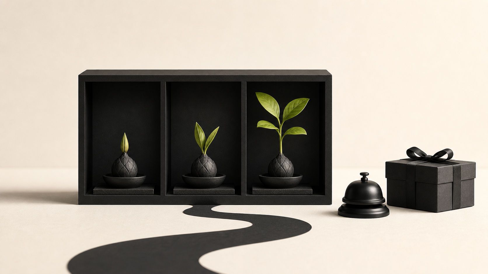

Week-two retention slips. The team reaches for points and a daily streak. Someone schedules a push notification for 9 a.m. The next release supplies more reasons to tap. Yet Tuesday still looks like Monday.
A prompt wins a glance. A return reason gives someone new information, unfinished work, or a changed decision. Without one of those, the product is asking for another empty trip.
My view is blunt: rewards belong on useful repeat behavior only after the product has earned that behavior. Asking points to manufacture demand for a static experience is bad product work.
Attention is not the same as repeat value
Teams often treat any return visit as evidence of value. Sometimes it is. Sometimes the red badge got a reflexive tap, or the user opened the app to protect a streak. The event count is identical. The lesson is not.
The evidence on motivation calls for precision. Edward Deci, Richard Koestner, and Richard Ryan reviewed 128 experiments and found that several forms of expected tangible reward reduced free-choice intrinsic motivation. Positive feedback behaved differently: it increased free-choice behavior and reported interest. So blanket claims for or against rewards are lazy readings. The mechanism and the behavior matter.
Notifications have a smaller job. Apple says they should carry timely, high-value information, and its guidance cautions against repeated alerts for the same event. That gives a product team a clean test: can the message name what changed and why the timing matters? If not, the alert is probably covering for a weak return reason.
Find the product's meaningful delta
Responsible repeat use starts with a meaningful delta, meaning a change between visits that helps someone move their work forward. It might come from the product or another person. It could also come from fresh outside data or the user's earlier work. The origin matters less than the consequence: on this visit, a useful action is newly possible.
In practice, that change might look like this:
- A collaborator answered the question that had blocked a shared task.
- Fresh source data changed a recommendation or status.
- A scheduled process finished, and its result is ready to inspect.
- The user's accumulated work now reveals progress without needing a prize attached.
Some products do not change often enough to deserve daily use. Fine. A tax-preparation product may have an annual rhythm; a travel tool may matter only around a booked trip. Forcing either into a daily loop creates noise, not utility. The job should set the cadence, even if the engagement chart looks quieter as a result.
Design the loop before decorating it
Habit research helps here, but only up to a point. In a 12-week study, Phillippa Lally and her colleagues asked 96 volunteers to repeat a chosen behavior in the same context. Automaticity rose with repetition, although the time needed varied widely among participants. A stable cue can make an action easier to start. The paper does not grant a product permission to make that action pointless.
Before discussing points or notification copy, write the return loop in plain language:
- What has changed since the person's last useful session?
- How will they discover the change without being pestered?
- What action becomes possible when they return?
- What result makes the visit feel complete?
If the first answer is "nothing," stop. The defect sits deeper, perhaps in the product model or the supply of fresh content. It may live in the collaboration system instead. Notification copy cannot repair it.
A practical example: the quiet planning tool
Picture a small team building a planning product. Users write a weekly plan on Monday and then disappear. The team considers points for daily check-ins.
But the plan remains frozen until its author edits it. On Tuesday, the app offers Monday's screen. Points would pay for the visit without improving it.
The better question is what useful change the system could support between planning sessions. A teammate might flag the dependency blocking Friday's launch. Completed work could alter the capacity forecast. Or the product could prepare a Friday review that compares the plan with what actually happened. Now there is something to inspect or decide. A notification can help at that point, but it should name the event: the dependency changed, or the review is ready.
The team can measure this loop honestly. Do people return when the dependency changes? Once back, do they make the newly available decision? A muted reminder with no new information is useful evidence too. These behaviors separate product value from traffic bought with a prompt.
Earn the next visit
Repeat use makes sense when the user's purpose matches the product's cadence. A reward can make real progress easier to see. A reminder can arrive at the moment a blocked decision becomes available. But neither deserves a place in the design merely because retention is down.
Start with what changed and what the user can now do. Then ask whether the mechanic clarifies that opportunity or merely applies pressure. If the product has earned another visit, make the reason unmistakable.
Pressure-test your return loop
If your team is reaching for a new engagement mechanic, Edgecaser can help identify the product change and operating decision that should come first.
Talk through the return reason